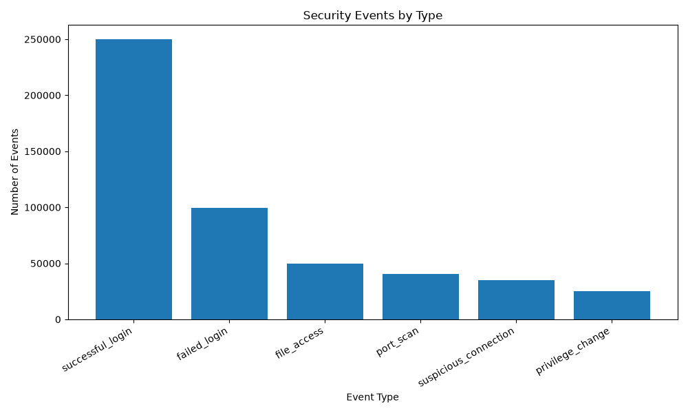
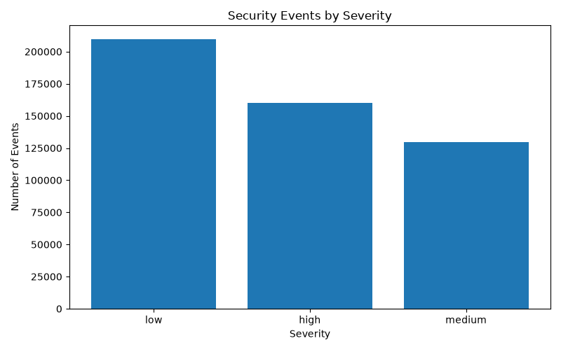
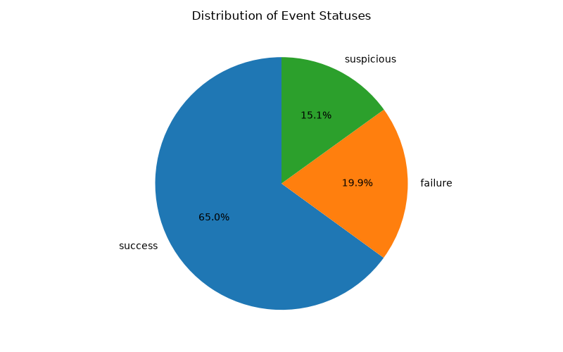
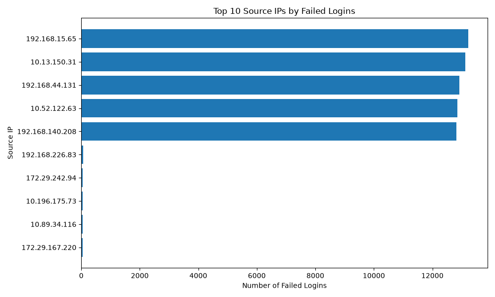

Automated Security Log Analysis Report
Generated: 2026-10-27 19:14:55 FLE Standard Time
| Event Type | Count |
|---|---|
| successful_login | 250,175 |
| failed_login | 99,728 |
| file_access | 49,806 |
| port_scan | 40,255 |
| suspicious_connection | 35,027 |
| privilege_change | 25,009 |
| Severity | Count |
|---|---|
| low | 209,894 |
| high | 160,354 |
| medium | 129,752 |
| Status | Count |
|---|---|
| success | 324,990 |
| failure | 99,728 |
| suspicious | 75,282 |
| Source IP | Failed Logins |
|---|---|
| 192.168.15.65 | 13,225 |
| 10.13.150.31 | 13,131 |
| 192.168.44.131 | 12,928 |
| 10.52.122.63 | 12,850 |
| 192.168.140.208 | 12,813 |
| 192.168.226.83 | 66 |
| 172.29.242.94 | 51 |
| 10.196.175.73 | 51 |
| 10.89.34.116 | 51 |
| 172.29.167.220 | 50 |




Times are measured separately by each analysis module. The Python baseline is measured during report generation. Results depend on the machine, environment, and implementation.
| Technology | Execution Time |
|---|---|
| Python (baseline) | 1.9866 seconds |
| Dask | 0.8326 seconds |
| PySpark | 12.9739 seconds |
| Ray | 3.1180 seconds |